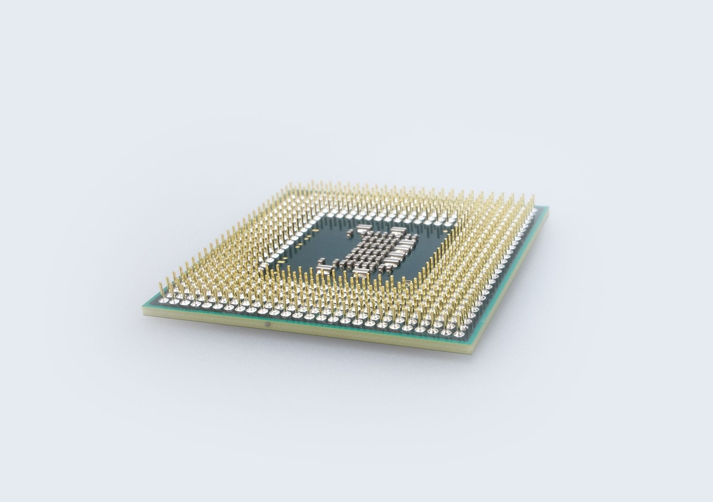

게르마늄·갈륨 동시 한국산화, 중국 규제 이후 2년의 성적표

중국은 2023년 8월 갈륨·게르마늄 수출 허가제를 도입한 데 이어 2024년에는 안티모니·초경합금 소재까지 통제 품목을 확대했다. 게르마늄의 경우 중국의 글로벌 점유율은 정제 기준 약 67%로, 갈륨(95%)보다 낮지만 여전히 가장 큰 공급국이다.
고려아연은 게르마늄을 아연 제련 잔사에서 회수하는 공정으로 연간 10톤 이상 생산을 시작했다고 전해진다. 게르마늄은 광섬유 프리폼·적외선 광학·태양전지 등에 쓰이며 국내 수요는 연간 20~30톤으로 추산된다.
스트레이트뉴스 보도에 따르면 한국 정부는 게르마늄 국산화 품목에 대해 소재부품장비 특별법상 공급망 안정화 지원을 적용하고, 2024년부터 전략비축 물량에 국산 게르마늄을 편입시키는 방향을 검토 중이다.
갈륨과 게르마늄을 동시에 국산화한 나라는 현재 미국(nyrstar 유관), 캐나다(Teck), 벨기에(Umicore) 정도다. 고려아연이 두 품목을 동시에 확보하면 아시아에서 사실상 유일한 이중 전략광물 생산 허브가 된다.
게르마늄과 갈륨의 국산화는 단순 수입대체가 아니다. 이 두 소재는 수출규제 대상 1·2호였기 때문에 '한국이 중국 규제에 어떻게 반응하는가'의 국제적 신호가 된다. 일본·독일·미국의 소재 동맹 파트너들은 한국의 국산화 속도를 공급망 신뢰도 지표로 본다.
고려아연 단일 기업이 두 품목을 동시에 커버하는 구조는 리스크 집중이기도 하다. 고려아연의 생산 공정에 문제가 생기면 국내 대안이 없다. 정부가 제2의 게르마늄·갈륨 생산자를 육성하지 않으면 '독점 국산화'의 함정에 빠진다.
고려아연: 전략광물 2종 동시 생산 능력으로 정부 조달 우선 협력사 지위를 굳힌다. 게르마늄 수익화는 이미 진행 중이며, 갈륨까지 더해지면 연간 수백억 원 규모의 전략광물 매출 포트폴리오가 형성된다.
국내 광섬유·적외선 광학 업체: 게르마늄 국산화로 OFS(광섬유 슬리브)용 게르마늄 프리폼 가격 변동성이 줄어든다. 특히 KT서브마린, LS전선 등 해저케이블 생산 업체는 광섬유 코어 소재 원가 안정 효과를 얻는다.
중국 게르마늄 정제업체: 한국의 국산화 확대로 아시아 시장 내 게르마늄 가격 협상력이 약화된다. 현재 한국의 게르마늄 수입 단가는 중국산 기준 킬로그램당 1,200~1,400달러 수준인데, 국내 공급이 늘면 한국 내 가격 기준점이 낮아진다.
국내 제2·3의 전략광물 후보기업: 고려아연의 독주 체제가 굳어지면 정부 지원과 시장 물량이 한 곳에 집중되어 신규 진입자의 사업성이 악화된다.
게르마늄 수요처(광섬유·적외선 센서·태양전지 기업)는 고려아연의 게르마늄 수율 데이터를 직접 확인하고, 2025~2026년 단기 계약과 2028년 이후 장기 계약을 분리해서 협상 전략을 짜야 한다.
산업전략가 관점에서 정부는 게르마늄·갈륨 양쪽의 제2 생산자 육성에 최소 500억 원 규모 R&D를 별도 책정해야 한다. 현재 소부장 1,700억 원 패키지 안에 전략광물 회수 공정 개발을 명시적으로 편입시키지 않으면 고려아연 의존 구조는 바뀌지 않는다.
실제 조달 현장에서는 — 게르마늄 국산화 초기 단계에서 순도(99.999% 이상) 인증 문제가 가장 자주 발목을 잡는다. 광섬유용 게르마늄은 5N(99.999%) 이상을 요구하는데, 아연 제련 부산물 기반 회수 공정은 불순물 제어가 까다롭다. 구매담당자는 반드시 배치별 ICP-MS 분석 성적서를 계약 조건에 포함시키고, 초기 6개월간 납품 샘플을 전수 검사하는 구조를 만들어야 한다.
이 포스팅은 쿠팡 파트너스 활동의 일환으로 수수료를 제공받습니다.